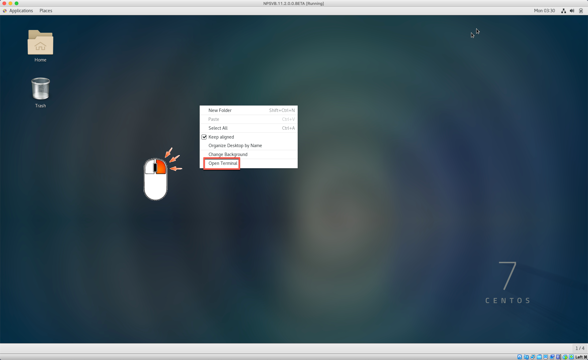
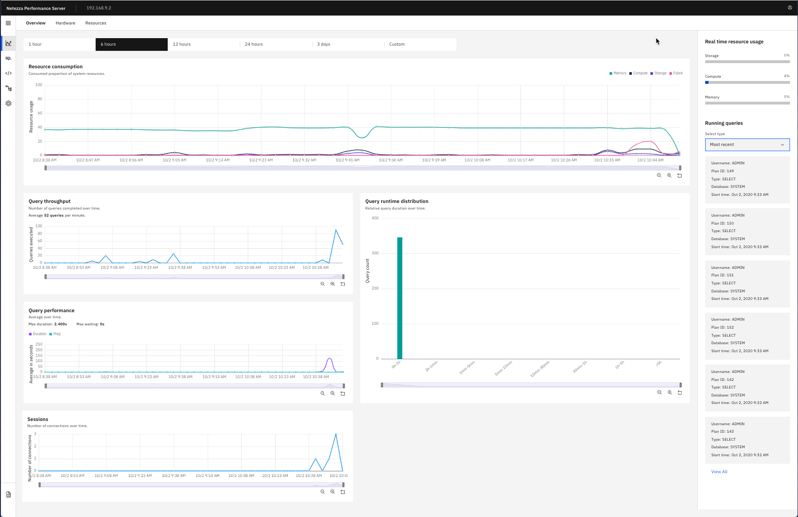
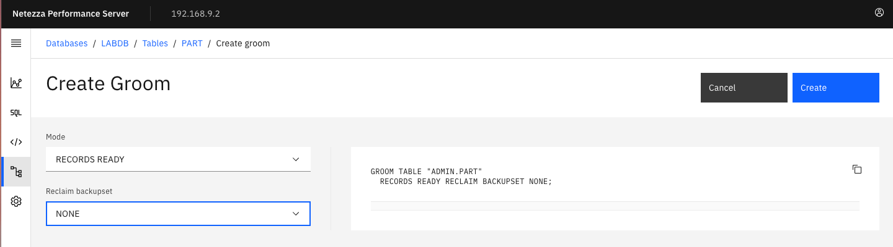

1 Web Console
In this lab we will explore the features of the IBM Netezza Performance Server console. The console is a HTML-based application that allows users to manage the system, obtain hardware information and status, and manage various aspects of user databases, tables, and objects.
The VMWare image we are using in the labs differs significantly from a normal Netezza Performance Server. Each Netezza Performance Server has the Web Console running as an OpenShift containerized application on the control plane/master nodes. In this environment, the Web Console is running natively on the NPSVB virtual machine.
2 Lab Setup
This lab uses an initial setup script to make sure the correct users and database exist for the remainder of the lab. Follow the instructions below to run the setup script.
-
Login to NPS Command Line using one of these two methods.
-
Login to the VM directly and use the terminal application available inside the VM.
-
Connect to your Netezza Performance Server image using a terminal command, for example PuTTY (Windows) or Terminal (Mac).
-
See the Setup Lab for more details on accessing the Linux command line.
-
If you are continuing from the previous lab and are already connected to
nzsqlquit the console with the\qcommand. -
Prepare for this lab by running the setup script. To do this use the following commands:
Input
cd ~/labs/console/setupLab/
./setupLab.sh
Output
DROP DATABASE
CREATE DATABASE
ERROR: CREATE USER: object LABADMIN does not exist.
ALTER USER
ALTER DATABASE
CREATE TABLE
CREATE TABLE
CREATE TABLE
CREATE TABLE
CREATE TABLE
CREATE TABLE
CREATE TABLE
CREATE TABLE
Load session of table 'NATION' completed successfully
Load session of table 'REGION' completed successfully
Load session of table 'CUSTOMER' completed successfully
Load session of table 'SUPPLIER' completed successfully
Load session of table 'PART' completed successfully
Load session of table 'PARTSUPP' completed successfully
Load session of table 'ORDERS' completed successfully
Load session of table 'LINEITEM' completed successfully
While the setup script is running proceed to the next step.
2.1 Starting NPS Web Console
After booting up the NPSVB virtual machine with Virtual Box follow these steps to start the Web Console application inside the VM:
-
Open a terminal application from the VM Desktop or remotely with PuTTY (Windows) or Terminal (Mac).
- VM Desktop: open a “Terminal”, right click Desktop and select “Open Terminal”

- VM Desktop: switch to the
rootuser
su –
password: netezza
- Remotely via ssh
ssh root@192.168.9.2
password: netezza
- Start the service pods
start-cyclops.sh
- Check that the two pods are running
docker ps

To stop the console, run the following command for each container
docker stop <container-id>
2.2 Launch the NPS Console
If you already configured the access to the NPS in the Setup Lab, you can skip this chapter.
Open a browser on your host machine or from the virtual machine, use
https://192.168.9.2:8443 as URL.
Add an the local NPS instance
- Click Add instance
Enter the following information:
- Name:
NPS VM Local - Host:
192.168.9.2 - Port:
5480 - Admin Username:
admin - Admin Password:
password
Click Save.
If you see the following error on the top right of your browser then Netezza is not active

Go to the VM Linux command line and run nzstart as the nz user.

Click the three vertical ellipes to right of the newly created instance and select Add credentials.

Note: There are four available options:
- Add credentials
- Edit
- Rename
- Remove
Enter the following values (admin is the default superuser for NPS)
- Username:
admin - Password:
password
Click: Save

This is a database user defined inside of NPS by the create user SQL statement.
admin is the default superuser for NPS.
The instance should now have a hot link for the host URL.
You can select the three vertical ellipses to reveal the following options:
- Add DB user credential
- Edit system credential
- Rename
- Remove
Click on the Host URL to gain access to the NPS Console for Instance: NPS VM Local.
-
Navigation menu to expose all menu options.
-
Dashboard – the default view, shows the over system usage over different or custom time horizons (1 hour, 6 hours, 12 hours, 24 hours, 3 days, Custom).
-
Query Editor – Run/review SQL statements of the active Netezza instance, display results and optional display plan graph.
-
Queries – Recent queries, Encumbrance or Stored Queries
-
Data – manage database objects
-
Administration – User Management, Recovery events, Event rules, Schedulre rules, History Configuration
-
Resource consumption – system resources: Memory, Compute, Storage, Fabric
-
Query throughput – Number of queries completed over time
-
Query performance – Average query performance over time
-
Sessions – number of sessions connections over time
-
Query runtime distribution – number of queries run for a given time range: 0-2 seconds, 2 second – 1 minute, 1 – 5 minutes, 10 – 30 minutes, 30 minutes – 1 hour, 1 hour – 5 hours, > 5 hours
-
Real time resource usage – Storage, Compute Memory, Memory
-
Running Queries – Long running query, recent queries
Congratulations you now have access to the NPS Console running inside the NPS VM.
3 Troubleshooting the Web Console
If you receive this error when attempting to access the NPS Console: “This site can’t be reached” follow these steps to resolve the issue.
Stop active containers:
docker ps
Take note of the container IDs.
Stop active containers:
docker stop <container-ID>
Remove the inactive containers:
docker ps -a
Take note of the container IDs.
Stop active containers:
docker rm <container-ID>
Reinstall NPS Console:
/root/cyclops\_dockerrun/standalone-install.sh
4 Monitor System Performance
At this point you should be connected to the NPS console. The main screen after logging on displays information on the system usage and throughput. In the main screen you will be able to monitor some of the key performance metrics:
- System utilization
- Throughput
- Average query performance
- Number of active queries

Scroll down to retrieve information on active sessions in the system:

Use the slider below the "Query throughput" tile to display information for the last two hours:
Notice how the displayed information changes:

Click this icon to open the Query editor menu option under the Navigation menu. (Top Left)
This allows you to execute queries against a database. You can store the queries as well. In addition to the result of the query you can also look at the explain plan.
Let’s create a query called testquery (1) against database LABDB (2) and schema ADMIN (3).
Enter the following SQL statement (4) and click Run (5) to execute the query.
Input:
SELECT SUM(L_QUANTITY), AVG(L_TAX) FROM LINEITEM WHERE EXTRACT(MONTH
FROM L_SHIPDATE) = 4
Note: Typically you terminate the SQL statement with a semicolon (;). In
this example omit the semicolon (reason: issue with Plan Graph when
using a semicolon, next step). The result is displayed on the right side
of the page:

Clicking Plan graph tab to displays information on the access methods used for this statement:

You can access the different parts of the console through the "Navigation" menu in the upper left corner.
5 Retrieve Information on NPS Configuration
From the Navigation menu select “Dashboard”. Select the Hardware tab to access the hardware monitoring portion of the NPS console.
The Overview tab displays:
- Summary
- System state
- Authentication
- Version
- Spare disks
- SPUs (Snippet Processing Units)
- Total
- Online
- Active
This is a Netezza Performance Server VM which only has 1 SPU. A typical Netezza Performance Server will have many SPUs.
- System disk status
- Total disk space
- Used
- Free
- Data slices over 90% disk space
- Storage utilization
- Minimum
- Average
- Maximum
Click SPU units to retrieve information on the SPUs defined in the VM.
The one data slices in your system can displayed as well: Click Data Slices

6 Manage Databases
Click the Navigation menu and select the click Data to access the Databases screen of the NPS console. The following screen opens:

You see that the two databases in the system are displayed: The SYSTEM database and the LABDB database that you created earlier.
Click LABDB. An overview of the database object is displayed. In total, this database has 11 objects: three schemas and eight tables.
Click to open the overview of the database tables.

Use the sort option of the view to find the table with the most rows, click Record count header.
As you can see, table LINEITEM has over 6 million rows.
For the PART table select the Kebab (three dots) to the right. This allows you to run several operations against the table, like RENAME or GROOM.

Click Groom. A new screen opens that allows you define the mode to be used by GROOM and if a reclaim backup set should be used.

Do not start the GROOM, but instead go back to the main page of the database menu by clicking Databases from the breadcrumbs.

Click Create database to open a new pane that allows you create a new database.
Create a new database TESTDB. Enter TESTDB (1) in the name field and click Create (2).

The console opens a new pane, with information on the database objects in the newly created database TESTDB.
Go to the Tables view of this screen.
Click Create table to add a new table. Choose ADMIN (1) as the schema and TESTTABLE (2) as the table name. Click Create + (3) in the columns section to add a column called C1 (4) of type BIGINT. Enter a second column called D1 (5) as type DATE. Select C1 (6) as the distribution column.

The console shows you the DDL statement that will be used to create the table:
Click Create (7) to create the table.
In the next screen, go back to the database overview: Click Databases

You can easily administer databases in the console. Let’s delete the new database TESTDB now. Move your mouse to the end of the line for the database TESTDB. Click the Kebab menu (1) for the TESTDB database and select Drop. (2)
Confirm the action in the pop-up menu, click Drop.
Back in the database screen, you see only the two original databases.
7 Queries
In the Navigation menu of the console go to Queries → Recent queries.

This opens a screen with information on the last queries that were executed in NPS.

On the left side of the screen, you can filter the result set. Filter to all by Status (Running, Success), Database, User.
Select the following filters: Status: Success, Database: LABDB and User: ADMIN
The result set is automatically filtered.
Select the Metrics tab for one of the queries to receive more details about a successful query.
Select a Plan ID for one the queries.

You are now on the query editor for the selected plan. You can run the query and/or get a Plan graph.
8 Explore
There are many other options available from the Console, please use this time to explore. You can connect to the NPS on Cloud instance previously added to the instance list to monitor a simulated workload and explore the history database.
- Administration
- User/Group Management
- Recovery events
- Event rules
- Scheduler rules
- History configuration